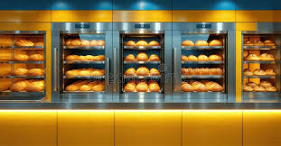

ÚLTIMAS NOTICIAS
Un negocio familiar muy dulce
Entrar en esta panadería es un viaje al futuro, donde la tradición se encuentra con la tecnología más avanzada. El aroma a pan recién horneado inunda el espacio, que en lugar de harinas y sacos, exhibe una estética minimalista y de diseño brutalista. Tras el mostrador, robots de precisión controlan la fermentación y horneado de cada pieza, mientras un panadero humano supervisa el proceso y elije los ingredientes ancestrales y funcionales para crear panes densos en nutrientes. La magia de esta panadería futurista radica en cómo la tecnología perfecciona el arte milenario, dando como resultado productos con una calidad y sabor excepcionales, preparados para un mundo nuevo. Seguir leyendo...
El Futuro de las Panaderías Artesanas
Entrar en esta panadería es un viaje al futuro, donde la tradición se encuentra con la tecnología más avanzada. El aroma a pan recién horneado inunda el espacio, que en lugar de harinas y sacos, exhibe una estética minimalista y de diseño brutalista. Tras el mostrador, robots de precisión controlan la fermentación y horneado de cada pieza, mientras un panadero humano supervisa el proceso y elije los ingredientes ancestrales y funcionales para crear panes densos en nutrientes. La magia de esta panadería futurista radica en cómo la tecnología perfecciona el arte milenario, dando como resultado productos con una calidad y sabor excepcionales, preparados para un mundo nuevo. Seguir leyendo...